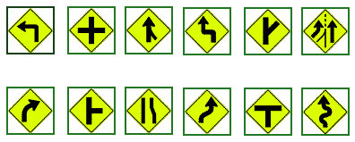
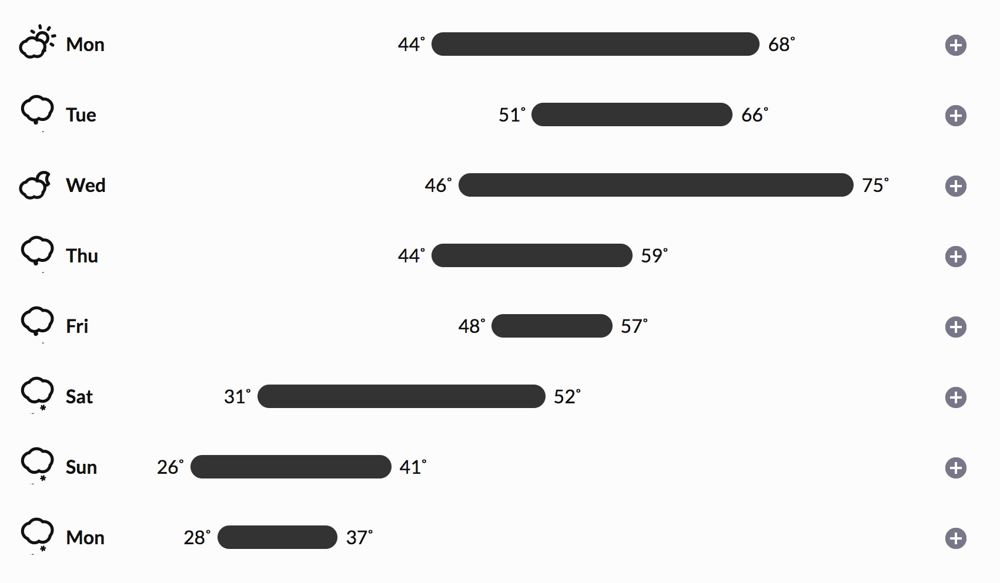
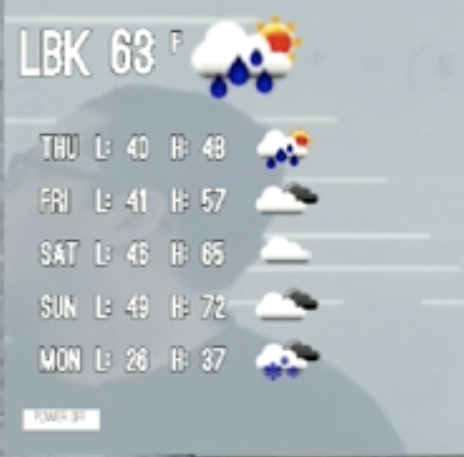
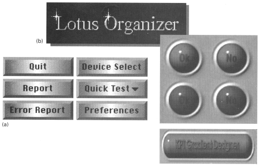
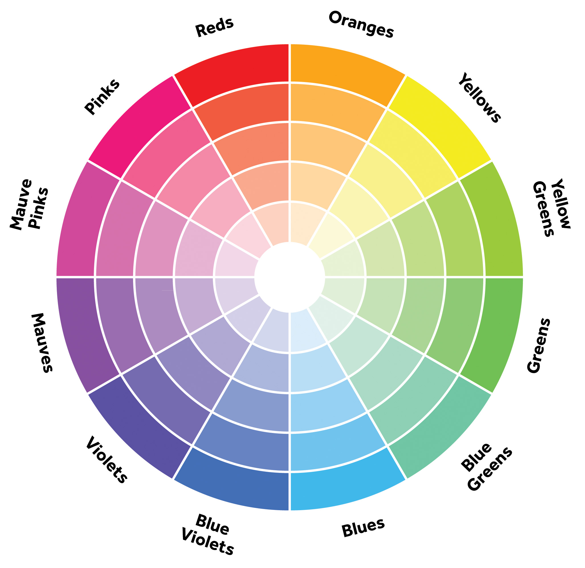
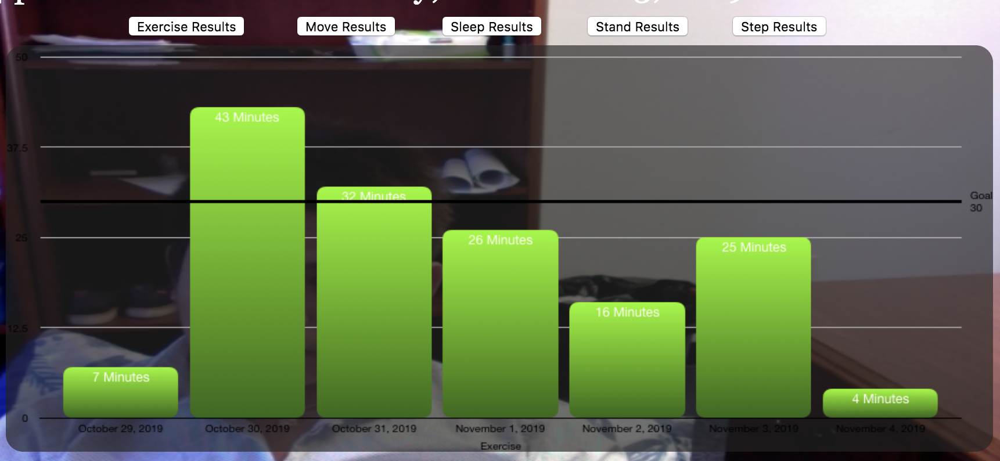
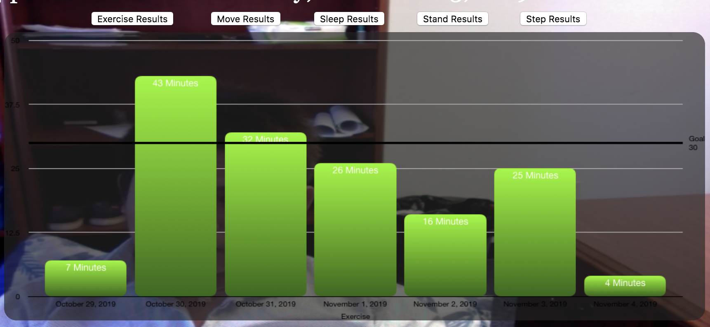

Elegance & Simplicity
Enhance communication by carefully selecting elements to
be emphasized
Applies to window layout, dialogue boxes, icons, etc.
Solve the problem completely, in a highly economical way

Here is a web page showing a wide assortment of US Road signs -
http://www.trafficsign.us/
Europe: http://www.reidsguides.com/t_au/t_au_road_signs.html
and http://www.ideamerge.com/motoeuropa/roadsigns/
and a good bad example: http://www.baddesigns.com/dontgo.html

and another good bad one, though this time its not the
sign's fault (I've had similar experiences in Evanston):
http://www.baddesigns.com/streetsn.html

Benefits of Simplicity:
3 Principles of Simplicity
- elements must be unified
to produce a coherent whole

- parts, and the whole, must be refined to focus the viewer's attention on
the essential aspects
- fitness of
the solution to the communication problem must be ensured at
every level
Lets look at some different ways to show the current and expected
weather from early 2016 in Chicago



(and note that the darksky.net icons such as 'light snow' or
'rain' are animated to show the snow flakes falling

and some older examples

Common Errors:
- Clutter and visual noise - packing too much information /
control into a single screen makes it difficult to organize what
is there and how to move through it

- Interference between competing elements - the text in the
menus competes with the text in the menu accelerators, and
sometimes the text for the accelerators can be quite long -
using an icon for the accelerator keys makes the distinction
obvious (but then you have to learn the code for the
accelerator)


another option is to use 'Ctrl' but grey it out to make it
obviously different from the command to its left
- Using explicit structure as a crutch - adding extra boxes and
lines can help to organize the elements, but it is also a sign
that you are in trouble, and can be easily abused and over-used.
See the clutter and visual noise example above.

- Overly literal translation - using the familiarity of a
physical object can help people quickly understand the software
version, but the software doesn't need to have the same
limitations as the physical object.
- Excessive detail and embellishment, including graduitous
3Dness, may look cool, but may also make the text harder, or
impossible, to read. These days with 'flat' icon design being
the common form you encounter this less and less, but trends
change and we will probably have a resurgence of 'realistic'
icons at some point.

Techniques:
- Reducing a
design to its essence
- Regularizing
the elements of the design
- Combining elements for maximum leverage
Reduction:
Reinforce the message by removing non-essential elements
- Determine the essential qualities (typically a short list of
adjectives) that should be conveyed by the design, along with
any fixed formal elements, such as a name or label, an essential
control, or color, texture, pattern, or image.
- Critically examine each element in the design and ask yourself
why it is needed, how it relates to the essence of the design
(identified above), and how the design would suffer without it.
If you can't answer any of these questions, remove the element.
- Try to remove the element from the design anyway. What
happens? If the design collapses, either functionally or
aesthetically, the element must be replaced. Otherwise, consider
omitting it from the final solution.
Department of Transportation Icons

here are a bunch more:
http://www.aiga.org/content.cfm/symbol-signs
Regularizing:
Establishing
a
pattern simplifies the design by moving the viewer's experience to a
higher level of abstraction.
Reduce information by repeating elements according to a
discernible rule, principle, or rhythm
Reduce visual complexity and enhance structure and
predictability
Align or reflect elements along common axis
Standardizing or repeating sizes and spacing
Reducing components to basic geometric forms
Any irregularity will be interpreted as significant by the
user who will cheerfully ascribe it to a meaning even where
none was intended. By regularizing non-critical elements
throughout the work, you can attract the user's attention by
reliably introducing an obvious irregularity whenever
you do wish to make a distinction.
Use of regular geometric forms, simplified contours, and
muted colors wherever possible If multiple similar forms are
required, make them identical, if possible,in size, shape,
color, texture, line weight, orientation, alignment, or
spacing. Limit variation in typography to a few sizes from one
or two families. To reap the benefits of regularity, make sure
critical elements intended to stand out in the display are not
regularized

Color wheel
Color brewer is a good resource for color selection: http://colorbrewer2.org/
Leverage:
good example is the header for a
window
- label
- drag area
- place to put window management controls
- place to show which window has focus
- Review the functional role played by each element in the
design. (This information should be a natural product of the
reduction phase.)
- Look for situations where multiple elements are filling (or
partially filling) the same role
- Question whether an element's role could be filled as well by
an adjacent component, possibly after minor modifications.
- Combine redundant elements into a single, simpler unit or
replace the lot with a common higher-level idiom from the target
environment designed to address the situation.
Too much leverage can be bad
- we talked earlier about the 70s LED watch with multiple
functions controlled by 2 small buttons: display time/date (the
display was normally off to conserve battery power), switch into
set time mode, switch into set date mode, increase the value of
the time (or date)
Updated: Nov 8, 2019
Source: https://www.evl.uic.edu/aej/422/week07.html
(material from: Designing Visual Interfaces by
Mullet and Sano)


 
